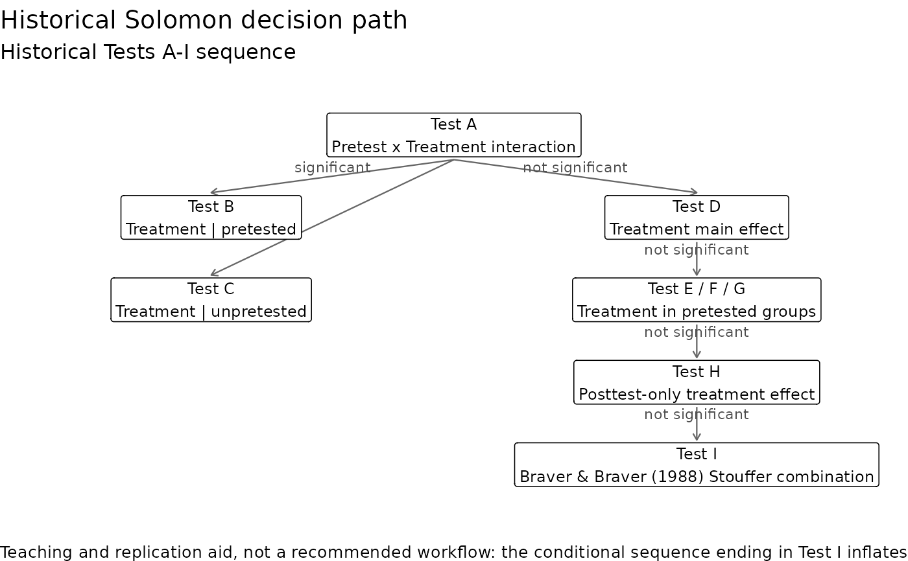
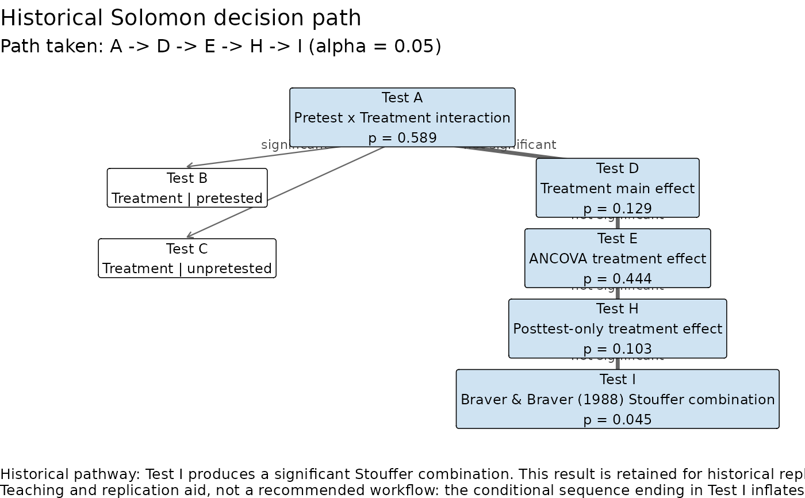

Draws the conditional Tests A-I sequence implemented in
fit_solomon_classic() as a decision tree. Test A (the Pretest x Treatment
interaction) decides the branch. If it is significant, Tests B and C
examine the treatment effect within each pretest condition. If not, Test D
examines the treatment main effect, followed if necessary by the selected
pretested-groups test (E, F, or G), Test H, and finally Test I, the Braver
and Braver (1988) Stouffer combination.
Arguments
- fit
Optional fit from
fit_solomon_classic(). Without one, the generic diagram is drawn.
Details
Given a fitted classic analysis, the tests it visited are highlighted with their p-values, following the fit's recorded path exactly, and the caption gives its conclusion.
The figure is a teaching and replication aid, not a recommended workflow.
Sawilowsky et al. (1994) found that the conditional sequence ending in
Test I has an experiment-wise Type I error rate well above its nominal
level; see vignette("solomon-methods").
References
Braver, M. W., & Braver, S. L. (1988). Statistical treatment of the Solomon four-group design: A meta-analytic approach. Psychological Bulletin, 104(1), 150-154.
Sawilowsky, S. S., Kelley, D. L., Blair, R. C., & Markman, B. S. (1994). Meta-analysis and the Solomon four-group design. The Journal of Experimental Education, 62(4), 361-376.
Examples
plot_classic_flow()

classic <- with(solomon_example, fit_solomon_classic(y_post, treat, pretested, y_pre))
plot_classic_flow(classic)
